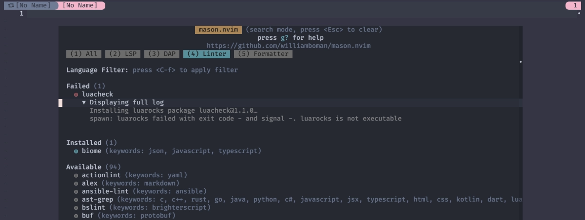
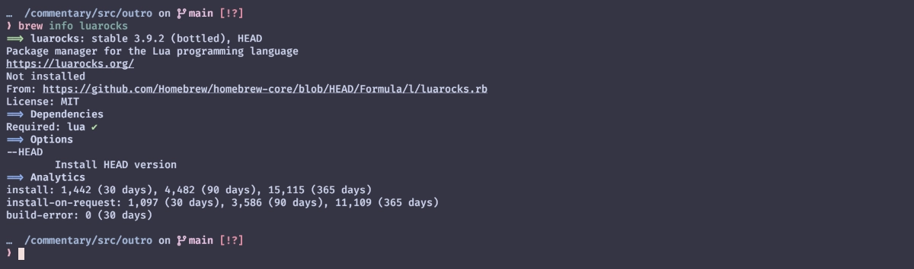
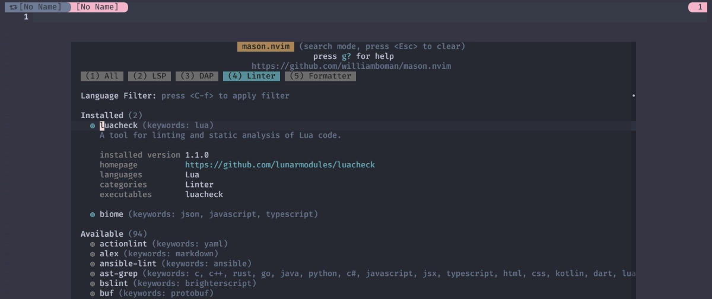
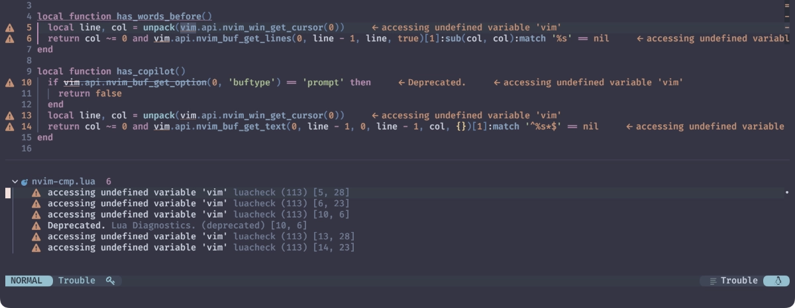
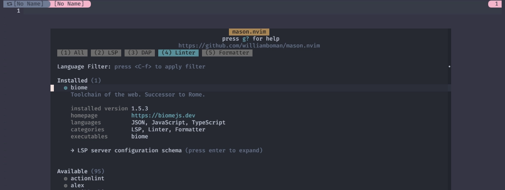
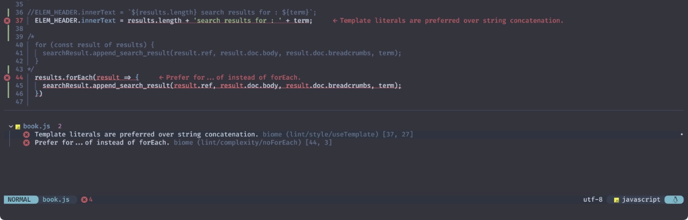
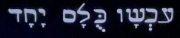

Linter
パパは昔 Beatles だったの？ 1
大変だ〜❗2024年が始まっているうぅぅ😭
それはもうなんだか、本当に色々ありました...。
しかしわたしも、ようやくバイオリズムってものを取り戻して💃 徐々に POWER が漲ってきました ⭐🕺
One, two, three, four
Can I have a little more?
Five, six, seven, eight, nine, ten
I love you
船を出そう❗機運を起こせ❗❗
A, B, C, D
Can I bring my friend to tea?
世界では紅茶に塩を入れたりですとか、緑茶に柚子や砂糖を入れたりですとか、 わーわーゆうとりますけども、わたしは "It's all right", "괜찮아" です🫖
ただ、"はちみつカモミール" のティーバッグを淹れてるわたくしなんかが首を突っ込んでも火傷するだけですので🤐
っていうか、柚子砂糖緑茶もティーバッグで売り出してほしいなー 🍵
...。🙂
って、tea のおはなし❗
Install
次項からはじまるのは、LuacheckとBiomeのおはなしです。
追加のインストールが手間だったり、そもそもその言語使ってないってことも当然あると思うので、 これらを実際にインストールするかどうかはおまかせします😺
E, F, G, H, I, J
I love you
Luacheck
Luacheck is a static analyzer and a linter for Lua. Luacheck detects various issues such as usage of undefined global variables, unused variables and values, accessing uninitialized variables, unreachable code and more.
LuacheckはLua用の静的アナライザであり、Linter です。 Luacheckは、未定義のグローバル変数の使用、未使用の変数や値、 初期化されていない変数へのアクセス、到達不能なコードなど、様々な問題を検出します。
Luacheck supports checking Lua files using syntax of Lua 5.1 - 5.4, and LuaJIT. Luacheck itself is written in Lua and runs on all of mentioned Lua versions.
Luacheckは、Lua 5.1～5.4とLuaJITのシンタックスを使用したLuaファイルのチェックをサポートします。 Luacheck自身はLuaで書かれており、前述のすべてのLuaバージョンで動作します。
いつも通りLuaで進めるためにLuacheckというlinterを試してみたいんですが...。

lualocks is not executable
「luarocksが実行できなかったよー」って言ってますね。
実はわたし自身、今までこれを使ってこなかったので「えぇ...😨」ってなりました。
でも、これはだいじょーぶ😉
LuaRocks
LuaRocks is the package manager for Lua modules.
LuaRocks は Lua モジュールのパッケージマネージャです。
インストールはDownloadの案内に従ってもいいし、
もっとお手軽にbrewとかaptなんかを利用することでも可能です。

あらかじめこれを行った上で再度mason.nvimからLuacheckをインストールすれば進めるはずです😌

できました😆
Try!
Luacheckが対応している言語はもちろんLuaです☺️

ちゃんと正しいコードなんだけど、vimが全部怒られるので「えぇ...😨」ってなります。
(いまいち自信がありませんが、この対応は次項で行います。)
あとなんていうか、自分がnvim_buf_get_optionを使っていることを把握していませんでした...。
ご指摘通り、これもだいぶ以前からDeprecatedになっています😅
ほんとはちゃんと触れなきゃいけないと思うんですが、
まずは17節を先に書き上げてしまいたいので、Issuesに挙げとくってことで見逃してください...🥲
2
.luacheckrc
これ、わたしも初めて使っているので色々試してるんですが、ちょっと謎で...。
例えば、Linterを有効にしたいファイルと並べて置いてみたとしても、これを使ってくれない...🫤
なので「ユーザーのルート(~/)に.luacheckrcを置いとけば、とりあえず見つけて使ってくれる」っていうのが
現時点での最高到達点です😅
中身はこれだけです。
ひとまずはこれでvimの警告は消えると思うんですが、どうでしょう...❓
Biome
One toolchain for your web project Format, lint, and more in a fraction of a second.
Web開発のためのたった1つのツールチェーン format、lint など一瞬で完了させます！
Biome はWebプロジェクトのための高性能なツールチェーンであり、 プロジェクトの健全性を維持するための開発者ツールの提供を目的としています。
(README.ja.mdより)
わたしも普段お世話になってるBiomeです。
確認してないんだけど、こっちはインストールと動作にnpmが必要なんじゃないかな❓
現時点 (2024/01/30) ではJSON,JavaScript,TypeScriptに対応していますが、
将来的にはCSS,HTML,Markdownにも対応するんだって😆
CSS is our next language of focus, and we are making good progress. HTML and Markdown will follow. Follow our up-to-date page to keep up with the progress of our work.
CSSは次の重点言語であり、順調に進んでいます。HTMLとMarkdownはその後に続く予定です。 私たちの仕事の進捗状況を知るために、最新のページをフォローしてください。
いつも通りmason.nvimからインストールしてみましょう。

これで準備完了かと思いきや、もう一手間必要です😦
biome.json
デフォルトではlinterが有効になっていないようなので...。
We recommend creating a biome.json configuration file for each project.
It eliminates the need to repeat the CLI options every time you run a command
and ensures that Biome applies the same configuration in your editor.
If you’re happy with Biome’s defaults, you don’t have to create the configuration.
プロジェクトごとにbiome.json設定ファイルを作成することをお勧めします。
これにより、コマンドを実行するたびに CLI のオプションを繰り返す必要がなくなり、Biome がエディタで同じ設定を適用するようになります。
Biome のデフォルトでよければ、設定を作成する必要はありません。
{
"$schema": "https://biomejs.dev/schemas/1.5.3/schema.json",
"organizeImports": {
"enabled": false
},
"linter": {
"enabled": true,
"rules": {
"recommended": true
}
}
}
The linter.enabled: true enables the linter and rules.recommended: true enables the recommended rules.
linter.enabled:trueはリンターを有効にし、
rules.recommended:trueは推奨ルールを有効にします。
biome.jsonは、Linterを有効にしたいjsファイルと並べてもいいし、
プロジェクトのルートに置いておいてもBiomeが見つけて使用してくれるようです。
Try!
ようやく準備完了です。jsファイルを開いてみましょう❗

実際はこれでもちゃんと動くコードなんだけど、Errorとして報告してきます。
...。🙄
とってもクセ❗❗
このサイトでも特になんにも考えないで気軽に使い始めてたんですが、 最初はなんか未曾有のバイオハザード🧟♂️だったので「えぇ...😨」 ってなりました。
Configuration file
ここまでで軽く触れたように、Luacheckにはluacheckrc、biomeにはbiome.jsonみたいな、
Linterのルールやマナーを調整する方法が用意されています。
たぶん他のLinterでもそうなってるんじゃないかな❓
ただ、そこまで詳しくもないわたくしなんかが首を突っ込んでも火傷するだけですので、このサイトでは扱いません🤐
(Neovimともまた別のおはなしだし😅)
Black, white, green, red
Can I take my friend to bed?
Pink, brown, yellow, orange and blue
I love you!
All Together Now
ということで、Linterのおはなしでした😆
ここではLuaとJavaScriptだけ取り上げましたが、
どのLinterを使う場合でも「似たようなもんだろー」と思ってもらえばだいじょうぶ❗
...たぶん😮
「えぇ...😨」ってなりました❓
そんな不安の退治法はひとつ。
Singing❗
One!
Two!
Three!
Four!!
(Bom bom bom bompa bom!)
Sail the ship!
(Bompa bom!)
Chop the tree!
(Bompa bom!)
Skip the rope!
(Bompa bom!)
Look at me!!
All together now 3 !!
All Together Now
TΩРА ОΛОI MAZI
Tutti insieme adesso
Nu allemaal samen
Todos juntos ahora
Kwa pamoja sasa
Tous en choeur maintenant

Allihopa tillammans nu
И ТЕПЕРЬ: ВСЕ ВМЕСТE
現在大家一齊唱
Und jetzt alle zusammen
それでは皆さん御一緒に
We are all together now!! 4
じか〜い、じかい。
17.6話「えるえすぴーミーツミー」という おはなし。
1: Lennon は、幼なじみの家で偶然 TV で流れていた 1968年公開の The Beatles のアニメーション映画 "Yellow Submarine" を観てきた息子 Sean に 「パパは昔 Beatles だったの？」と聞かれた。
2: 重ねてごめんなさいなんですが...。
初掲時に「vimは知らないのにnvim_buf_get_optionがDeprecatedなのは知ってる、とってもクセつよさんでした❗」
...とか書いちゃいましたが、これはLuacheckが出しているものではありませんでした😭
3: All Together Now (by The Beatles): McCartney は、観客に参加を求めるミュージック・ホールの伝統にインスパイアされたタイトル・フレーズを持つ、 子供向けの合唱曲だと説明している。 映画 "Yellow Submarine" のラストでは、この曲に合わせて各国語で "All Together Now" を意味する言葉が画面に現れる。